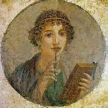
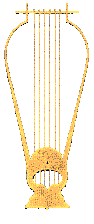

LA POESIA LIRICA
Cosa intendiamo comunemente per poesia lirica?
Un testo in versi, con una struttura formale caratterizzata da un ritmo, ma soprattutto che sia espressione di sentimenti, pensieri, riflessioni di un singolo, di un io poetico. Questa concezione è un'acquisizione recente: la poetica romantica ritiene infatti che l'arte sia espressione di un'individualità, che la poesia sia tale solo se lirica, ossia espressione del mondo interiore del poeta. Il primo vero poeta lirico della poesia italiana è Petrarca, che utilizza la poesia per esternare il proprio dissidio interiore. Anche il filone provenzale-stilnovistico si caratterizza come poesia lirica, ma in realtà abbiamo poco di veramente autentico e personale.
La poesia lirica nasce in Grecia ed è uno dei frutti più straordinari che quella cultura ci abbia lasciato. Nel VII sec. a.C., nelle raffinate e ricche città greche dell'Asia Minore nasce un genere poetico che si differenzia per struttura e temi dal poema. Gli antichi suddividevano i diversi generi poetici in primo luogo per la struttura del verso che dà al testo ritmi diversi. La poesia lirica si distingue dal poema epico perchè non utilizza esametri, ma forme metriche nuove, molto complesse ed elaborate. La lingua risulta diversa da quella dell'epica in quanto viene usata il dialetto eolico parlato in quelle zone. In terzo luogo la poesia lirica è accompagnata dalla musica di un particolare strumento musicale: la lira. Gli argomenti erano vari ma si distinguevano dall'epica, perchè non erano narrativi e riguardavano impressioni, sentimenti, stati d'animo, riflessioni personali. Ci sono molti generi nella poesia lirica, ognuno con una particolare forma metrica, a cui corrisponde uno specifico argomento: poesie d'amore, canti di guerra, riflessioni sulla vita e sulla morte....
La poesia lirica viene introdotta a Roma nel I sec. a.C. grazie al diffondersi di un individualismo sempre maggiore, di un disimpegno sociale degli intellettuali che riscoprono la loro interiorità. Questo gruppo di intellettuali è definito come poetae novi e proprio di questa nuova fase fa parte Valerio Catullo.